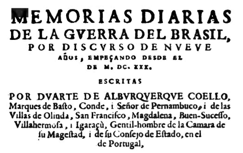
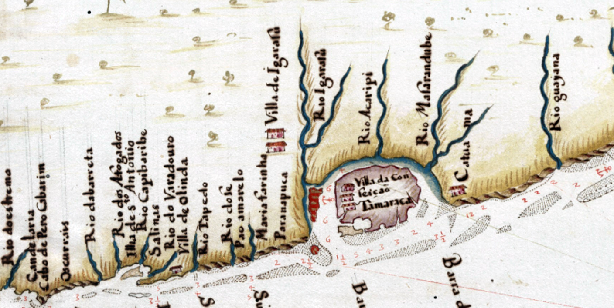
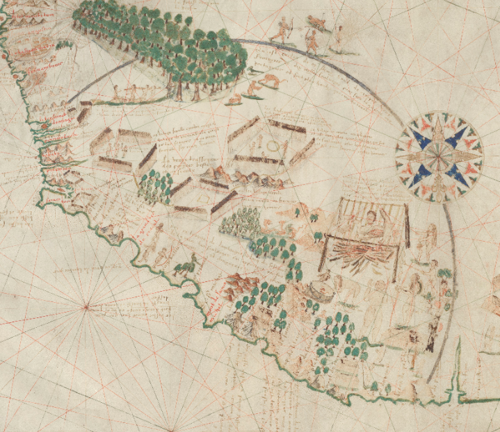
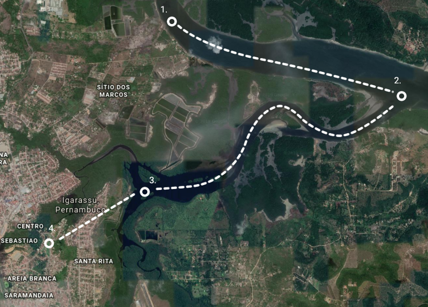
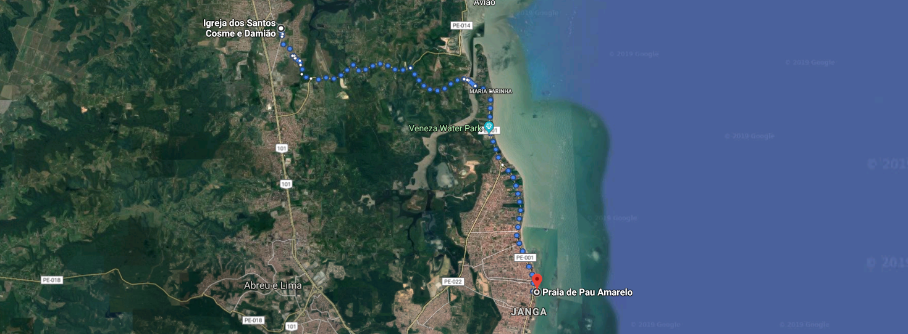

🦀 A aldeia de Igarassu
Minha gente, eu sei que não cheguei em Recife ainda. Mas é que eu preciso falar de outras cidades para só
então falar da capital da Via Láctea (peço paciência aos entusiastas da maior cidade em linha reta do
mundet cetera). Uma coisa difícil nesse comecinho é que literalmente não há mapas ainda. Os portugueses
eram terríveis cartógrafos no começo do século 16, época em que a própria língua portuguesa ainda
engatinhava (Camões nasceu em 1524).

Capa da publicação do diário de Duarte de Albuquerque Coelho (1654). Veja se tem alguma
condição esse português arcaico. E olhe que esse texto só foi publicado mais de 100 anos depois das
primeiras descrições do Brasil.
Os mapas que tenho usado nessa época são ou adaptações ou recortes dos primeiros mapas do mundo, de uma
época quando se começou a questionar o conceito de terra plana. Às vezes também faço recortes para
ilustrar uma janela histórica, como vai ser o caso da imagem de abertura desse texto, onde vou contar da
chegada de Duarte Coelho ao Brasil e a interação europeia com os moradores de Itamaracá e Igarassu.

Recorte sobre Itamaracá e Igarassu do Atlas do Brasil de João Teixeira Albernaz II (1666).
A primeira feitoria do continente
Partiu em 1530 Duarte Coelho de Lisboa uma esquadra em direção à barra de Itamaracá:
[…] embarcou toda a sua família, a de outros parentes seus, alguns casais, outras
pessoas que quiseram o
acompanhar, e navegando com feliz viagem, veio a entrar pelos fins de setembro do mesmo ano pela barra
de Itamaracá […]
Entrando pela barra, contornou a ilha e atracou no Porto dos Marcos. Essa barra, a do rio Santa Cruz,
dividia as demarcações feitas pela coroa portuguesa entre as capitanias de Pernambuco e Itamaracá. Era a
entrada mais segura até então, como discutimos anteriormente. Pedro Lopes de Sousa era o donatário de
Itamaracá e ali levantou uma feitoria fortificada por ordem do rei em 1522, quando expulsou os
franceses.
História da Capitania de Itamaracá
Logo que o rei Dom João III tomou posse, no fim de 1521, tendo a notícia de que na ilha
de Itamaracá os
franceses haviam levantado uma fortaleza com capacidade para 100 soldados, a fim de realizar comércio
com os nativos tanto da ilha, quanto da terra firme, despachou do reino uma esquadra com Pedro Lopes de
Sousa para que fosse primeiro à Itamaracá e depois ao resto da costa expulsando os franceses.

Recorte do mapa da costa do Brasil de Jacques de Vau de Claye (1579). Nele, podemos
observar uma série de descrições da vida nativa. Os franceses navegavam por toda a costa da América do
Sul.
Ordenou que destruísse todas as fortalezas e feitorias francesas e levantasse outras
para o comércio da coroa portuguesa. […] Os franceses na feitoria diminuiram resistência depois da perda
de suas naus e depois que os nativos da ilha (eram já nesse tempo os potiguares) voltaram-se contra
eles. O motivo da revolta foi que um nativo que resolveu se rebelar contra os hereges [os franceses],
juntou-se a um português, que andando entre os franceses, foi furtar as cargas francesas. Por azar, os
franceses os flagraram e os mataram. Então, alguns líderes potiguares foram a Pedro Lopes, capitão dos
portugueses, contar da sua revolta contra os franceses. Pedro Lopes os recebeu alegre e agradeceu a
atenção. Disse que os franceses não os faria mais mal e que ele também não o faria, porém apenas se eles
se entregassem sem resistência aos portugueses.
E assim se fez.
Os franceses, agora sem apoio dos potiguares, entregaram as terras aos portugueses e puderam escapar com
suas vidas. Pedro Lopes derrubou todas as construções e levantou suas próprias. Uma povoação na ilha e
no continente um porto chamado “dos Marcos”, que seria entregue à Duarte Coelho na fundação de
Pernambuco.
O “sítio”, o lugar, dos Marcos, em Igarassu.
Sobre Duarte Coelho
Em “Novo orbe seráfico brasílico” de frei Jaboatão, obra em que me baseei para escrever esse texto, há
uma apresentação de todos os donatários das capitanias brasileiras. Todos são rotulados como homens
ricos que vieram investir seu dinheiro por aqui com exceção de dois: Martim Afonso (capitania de São
Vicente) e o próprio Duarte Coelho. O texto descreve uma crença de que é preciso ser humilde para obter
sucesso em sua empreitada, crença comum (e progressista) para a época em que foi escrito, mas que hoje
entendemos que falha ao ligar postura humilde a posse¹. Não importa quanto capital ou acesso a capital
aqueles homens possuiam, apenas Martim e Duarte demonstraram interesse prático em dar início a um
projeto de ocupação e exploração.
Duarte Coelho é uma das figuras mais interessantes a se observar na história do Brasil. É ele quem vai
estimular, com o apoio ‘justificado’ da coroa portuguesa, um projeto de tomada do Brasil. O uso de força
naval e de fogo não era suficiente para tomar e manter todas as terras por completo sob domínio branco.
A Funai estima que o Brasil possuia 3 milhões de habitantes no ano de 1500, 2 milhões vivendo no
interior e 1 milhão no litoral. Era necessária uma outra forma de dominação e ocupação. Em resumo,
Duarte Coelho vai iniciar o processo de miscigenação (que significava dentro do contexto da época,
embranquecimento) das próximas gerações a fim de perpetuar uma comunidade de seus indivíduos.
Em setembro de 1530, Duarte Coelho e sua esquadra de navios entrou pela barra de Itamaracá, subiu o rio
Igarassu (ou Santa Cruz) e se estabeleceu no ponto de onde se iniciava a marcar as terras de sua
capitania (daí Sítio dos Marcos). Por achar a terra imprópria para fundação de uma vila, desceu o mesmo
rio e acessou o próximo braço à sul.

Caminho de Duarte Coelho até Igarassu.
Ali encontrou uma grande aldeia caeté bem protegida. Após uma forte resistência daquela comunidade, os
homens de Duarte Coelho conseguiram tomar a aldeia, onde seus moradores originais foram mortos e alguns
outros conseguiram escapar. Essa batalha terminou no dia 27 de setembro, dia de Cosme e Damião, santos
que deram nome à igreja, que se disputa ser a mais antiga do Brasil. Assim fundou a mais antiga vila da
capitania de Pernambuco.
Enganaram-se os portugueses se acreditavam que haveria sossego, Igarassu sofria ataques diários. Duarte
Coelho tratou de levantar trincheiras ao redor da vila, de guarnecer equipamentos para boa defesa e
principalmente, entendendo que não haveria sucesso (nem sossego) sem participação local, tratou de
buscar aliados da terra. Esses aliados seriam os primeiros a simpatizar com os portugueses por motivos
já discutidos. Eram eles os tabajaras.
Não satisfeitos com o acesso marítimo à vila e com a segurança dos portugueses, Duarte Coelho decidiu
sair com seus homens, portugueses e tabajaras, a pé, sob vigilância de seus navios, em direção ao oceano
em busca de um porto mais cômodo para fundar a capital de suas terras. Eles foram abrindo estrada
buscando uma praia até chegarem em Maria Farinha. Seguindo à sul por Pau Amarelo,
marcharam alertas como
em uma guerra pois pelo caminho encontraram inúmeras povoações caetés que não evitavam investidas contra
os invasores.

Apesar de eu não recomendar, há um caminho a pé até hoje de cerca de 18km entre a igreja de
Cosme e Damião e a praia de Pau Amarelo.
Os ataques nativos não eram fortes o suficiente para atrapalhar a marcha e os nativos foram mortos pelo
caminho sem muito esforço. Os portugueses encontraram um rio que entrava no continente, que pelo sabor
da suas águas, o nomearam de Rio Doce. O rio percorria um local que os nativos chamavam de
Paratibe² até
desembocar no mar. As praias eram desenhadas pelo subir e descer da maré e abriam um caminho claro e
limpo de Pau Amarelo até um monte à beira-mar onde se localizava a maior aldeia das terras
pernambucanas. A população local a chamava de Marim e era, segundo os relatos da época, a mais
populosa
das comunidades daquele litoral.
Considerações
Esse é o tipo de material que, depois dos mapas, mais me chama atenção. Além da descrição original dos
lugares que a gente é familiar, a descrição das relações entre as pessoas que ali estavam é fantástica.
A natureza do local, por mais violada que tenha sido, ainda se encontra lá do jeito que foi descrita
pelos portugueses. É impossível determinar o tamanho da população aniquilada por essa invasão, mas o
tratamento que essas pessoas recebem na literatura é cruel, suas mortes são até subentendidas na
descrição das “pelejas” portuguesas que só os descrevem como um mero obstáculo a ser atravessado.
É interessante se observar parte de todo esse cenário. A história não acabou, embora nossa educação nos
direcione a acreditar que “o índio” ficou para trás depois de um evento específico. Embora nossa
população tenha sido forçosamente embranquecida e já não se apresente como no século 16, ainda somos
observados como meros obstáculos a serem atravessados por quem vai nos colonizar.
Nossas noções de unidade foram embaralhadas propositalmente para facilitar esse atravessamento. Apenas
poderemos começar a desfazer esse nó uma vez que aprendermos a discernir o que é nosso e o que foi
imposto sobre nós. A colônia não morreu, apenas se resignificou.
O Janga
Também fica aí um abraço para meus amigos do Janga que tanto reclamam que aquele lugar nunca aparece na
história. Em todos os textos que tratam do século 16, o lugar só é tratado como “Pau Amarelo”, talvez
estivéssemos procurando da forma errada até então. ❤
Comentários do texto
¹ Essa crença da humildade como forma de acesso ao sucesso, apesar de parecer datada quando lemos um
documento do século 16, ainda é bem presente na nossa sociedade hoje. Parando pra pensar, parece um
discurso familiar aos que os coaches reproduzem.
² Até hoje não encontrei uma etimologia para a palavra Paratibe. Quebrando a palavra seguindo um padrão
dentre os termos geográficos podemos: pará ty pé, rio que corre; ou pirá ty pé, onde correm os peixes.
Referências
As citações desse texto são pedaços da história das capitanias de Itamaracá e Pernambuco na segunda parte
da obra de frei Jaboatão citada abaixo.